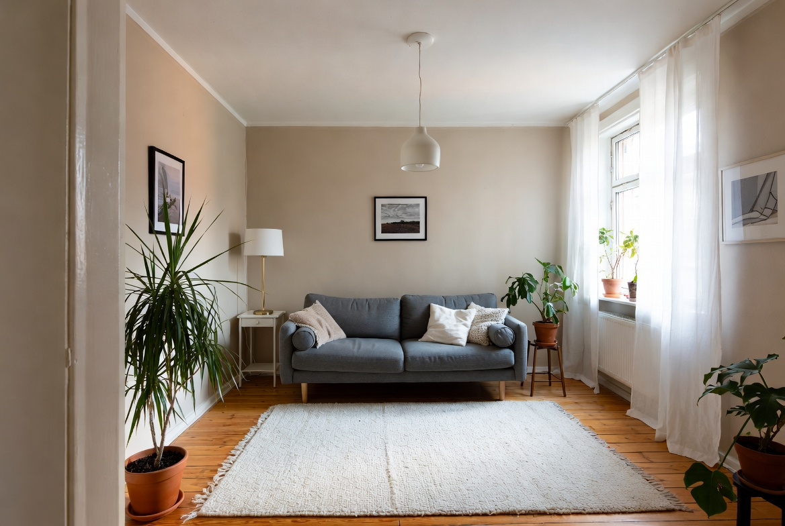
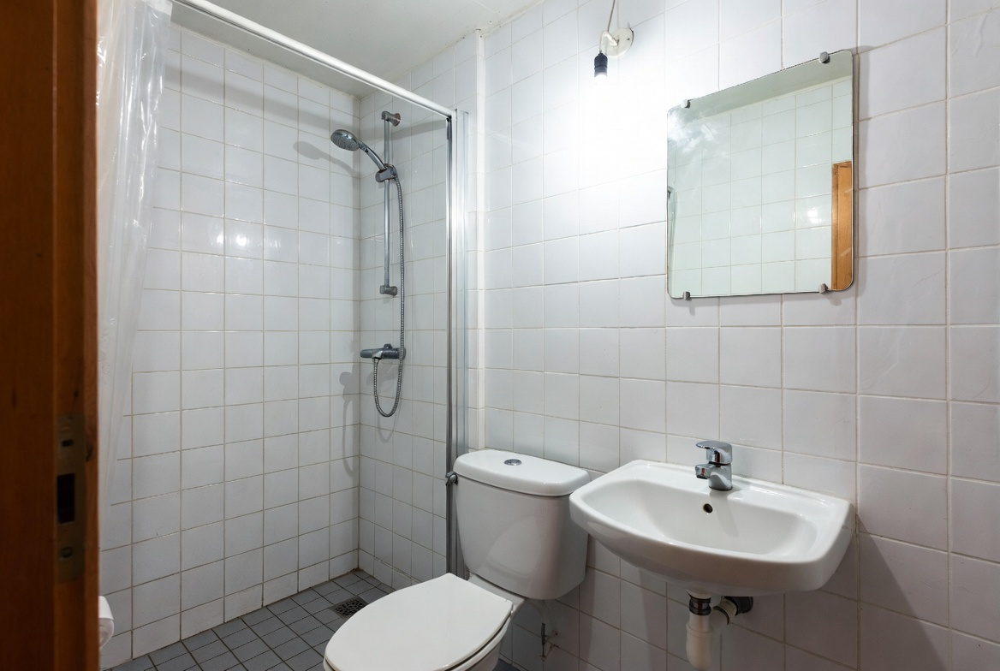
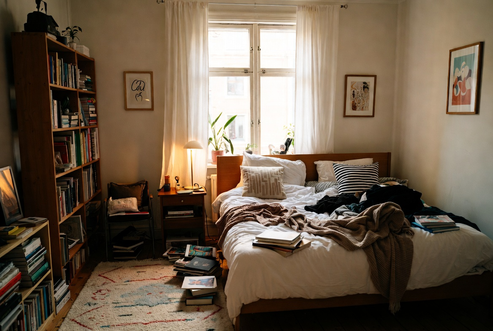
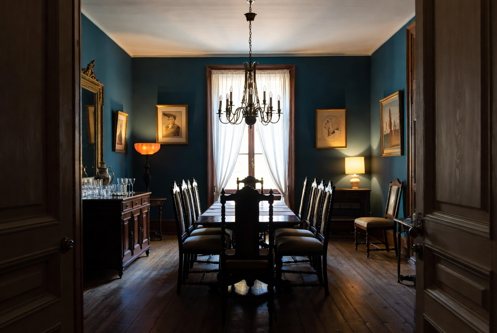
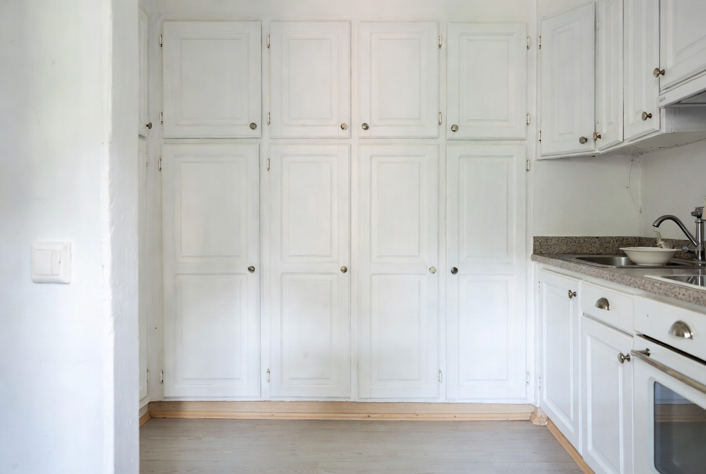
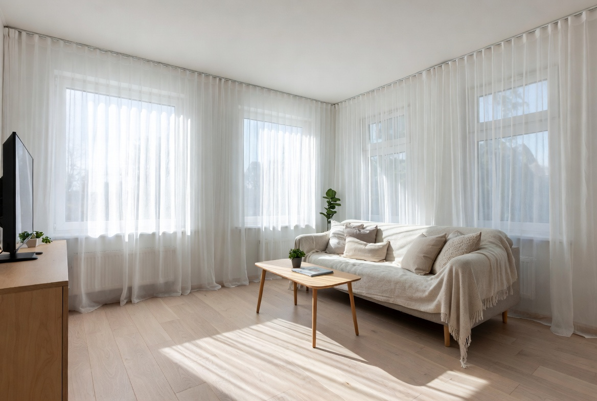

Utforska alla rum

Vardagsrum som känns lite tråkigt
Vi har precis flyttat in i radhus och vill ha tips på hur vi kan göra det mysigare och mer personligt.

Vitt kök som saknar värme
Nyrenoverat kök men det känns kalt. Behöver hjälp med färg, belysning och dekoration.

Barnrum till 5-åringen
Vill skapa ett rum som är både lekfullt och lugnt. Tips på färger och smart förvaring?

Tråkigt badrum från 90-talet
Vill göra om badrummet till en SPA-känsla på budget. Tips på färg och detaljer?

Första egna sovrummet
Precis flyttat hemifrån. Hur gör man ett litet sovrum mysigt och vuxet?

Matplats som känns tom
Vill skapa en trevlig matplats där man verkligen vill sitta länge.

Kök i gammal lägenhet
Hög takhöjd men känns mörkt. Tips på hur man kan lysa upp och modernisera?

Vardagsrum med högt i tak
Vill skapa mer mys och personlighet i det stora rummet.